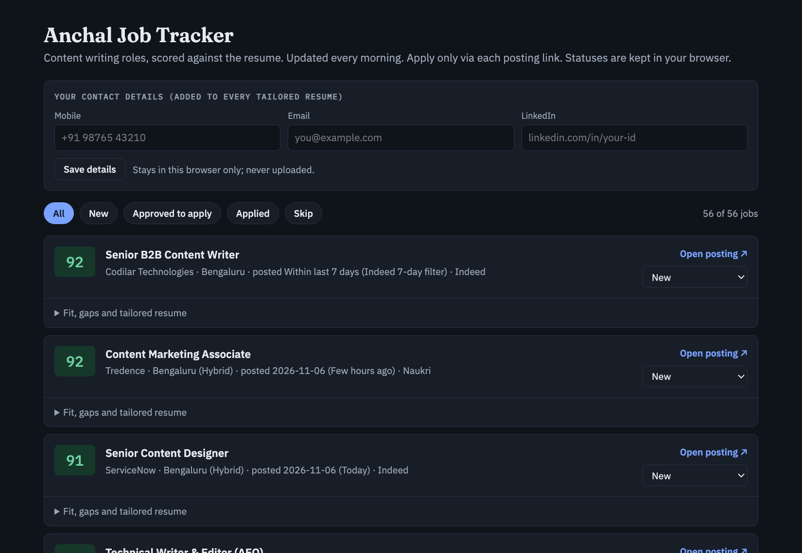
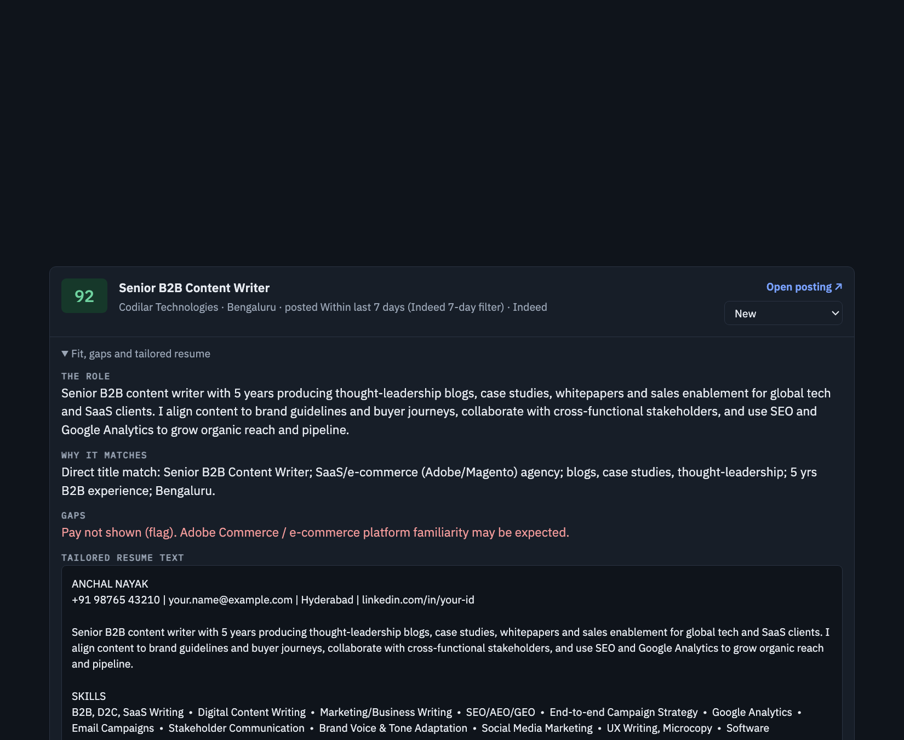
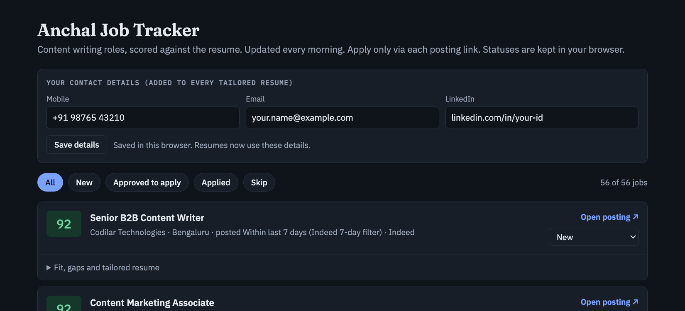
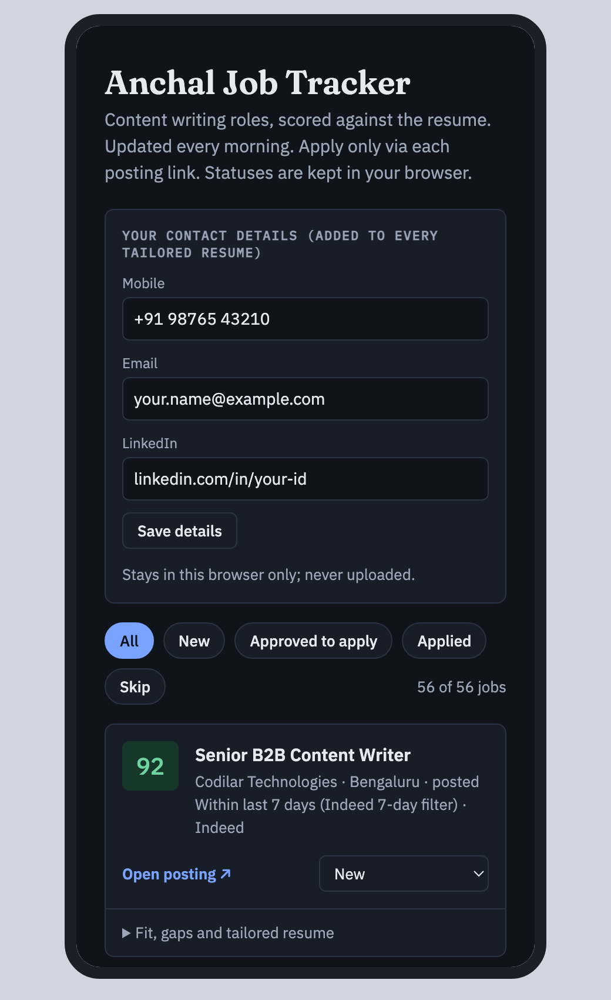
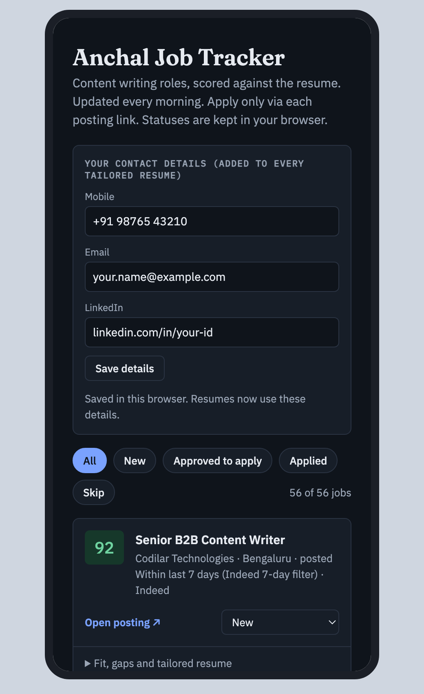
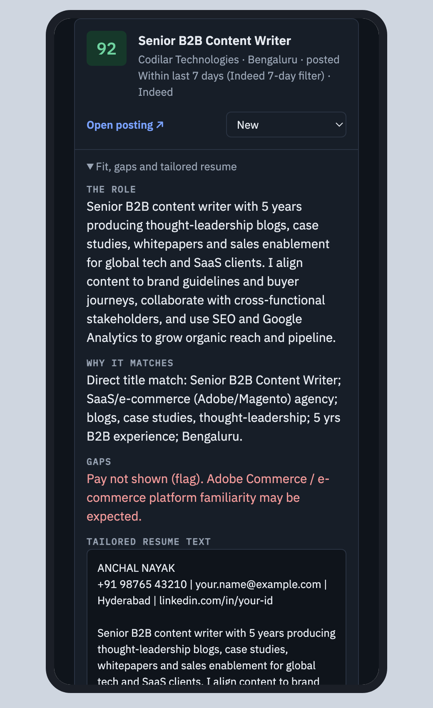
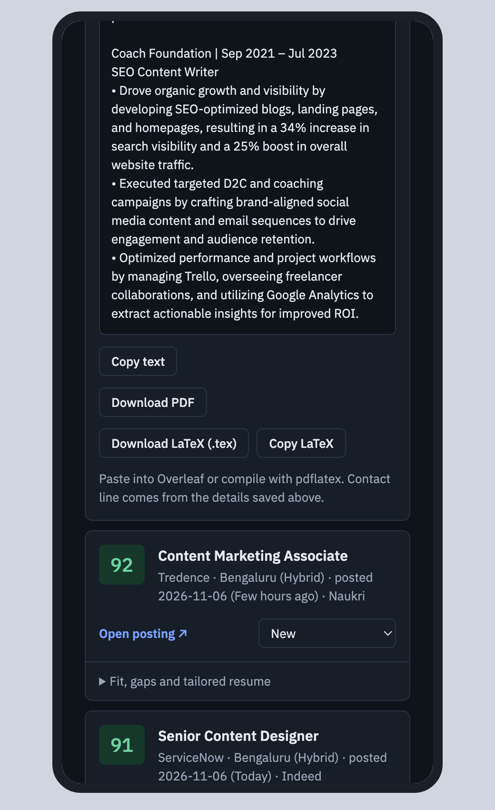
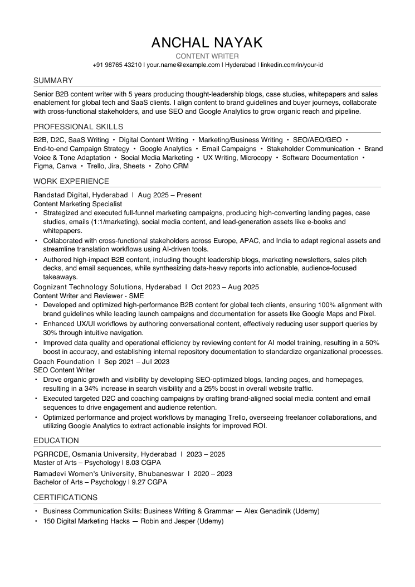

How to use the job board
A public list of content-writing jobs, scored against Anchal's resume, each with a tailored resume you can download as PDF. Updated every morning. No sign-in needed. The board never applies for you: you apply yourself from each posting's own page.
Open the board · Sample tailored resume (PDF)
1. Reading the dashboard

- Score (0–100) is how well the job matches the resume: title, skills, years of experience, location and domain. Green is 75+, blue 70–74. Jobs under 60 are never shown.
- Open posting ↗ goes to the original job page (Naukri, Indeed, Shine, Y Combinator startups and others).
- Status (New, Approved to apply, Applied, Skip) is your own tracker. It is saved only in your browser. Use the chips at the top to filter.
- Fit, gaps and tailored resume opens the details. Gaps include whether pay is shown. A tailored resume exists only for scores of 70 and above.

2. Save your contact details once
Enter mobile, email and LinkedIn in the box at the top and tap Save details. They are added to every resume you download or copy. They stay in your own browser and are never uploaded. If you clear site data or switch phone, enter them again.

3. Apply from your phone: worked example
Example job: Senior B2B Content Writer at Codilar Technologies, Bengaluru (score 92, found on Indeed). Any job with a resume works the same way.
Open the board link in Chrome or Safari. Scroll to the form, fill the three fields and tap Save details.


Tap Fit, gaps and tailored resume under the job. Read Why it matches and Gaps (here: pay not shown). Your contact line already appears at the top of the resume text.

Scroll to the buttons under the resume text and tap Download PDF. The file is named like Codilar-Technologies-Senior-B2B-Content-Writer-Anchal-Nayak.pdf.

Where it goes: on iPhone it opens in Safari's downloads and you can find it in the Files app under Downloads. On Android Chrome it is in Files → Downloads. This is the file you will upload in step 5.

Go back to the board and tap Open posting ↗. It opens Indeed. Postings were open when found but companies close roles early, so look for an Apply button. If it says the job is closed or expired, set the board status to Skip.
Tap Apply. Sites like Indeed, Naukri or Shine may ask you to sign in or create a profile. When it asks for a resume, choose Upload resume, then pick the PDF from Files / Downloads. Check name, phone and email are right, add a cover note if the form asks, and submit.
Back on the board, set the job's status to Applied so you can filter it out of the New list later.
4. Tips and limits
- Two other buttons. Copy text copies the resume text for forms that want pasted text. Download LaTeX gives a
.texfile for Overleaf. - Pay. The aim is 12 LPA or more. Jobs with stated pay below 10.5 LPA are dropped; when pay is not shown the job says so in Gaps. YC startups often list pay in USD.
- Fresh. Only postings from the last 7 days are added, and the list refreshes each morning.
- No auto-apply. Nothing is submitted for you. You always apply on the original site.
- Privacy. The board page contains no phone or email. What you type stays in your browser.
- If a button says "PDF library blocked". Some ad blockers stop the PDF tool from loading. Turn the blocker off for this page, or use Copy text.